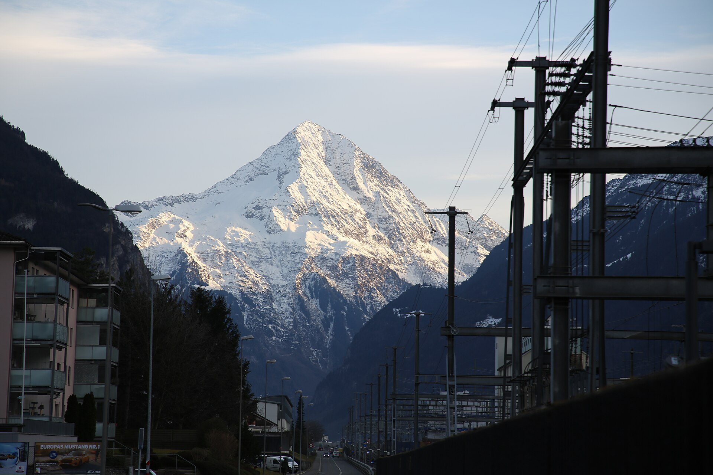
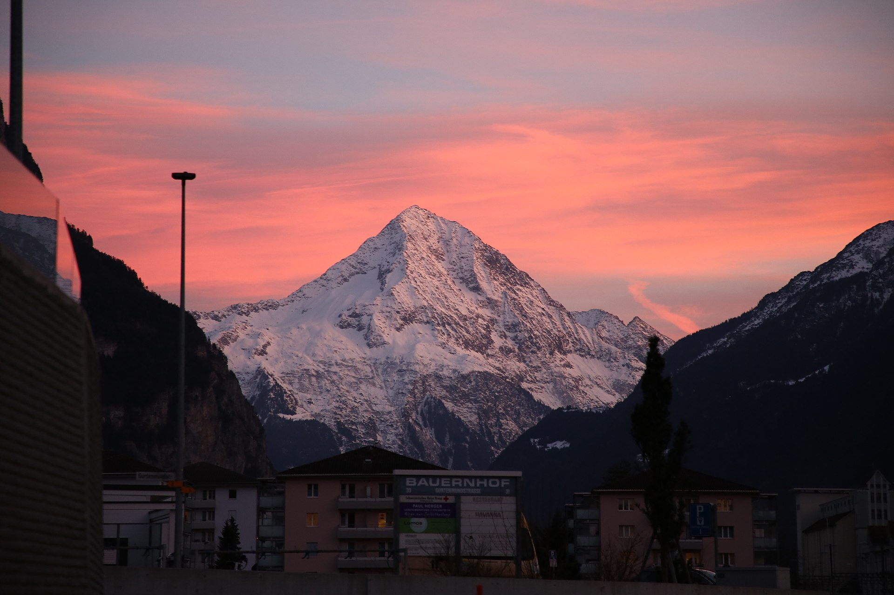
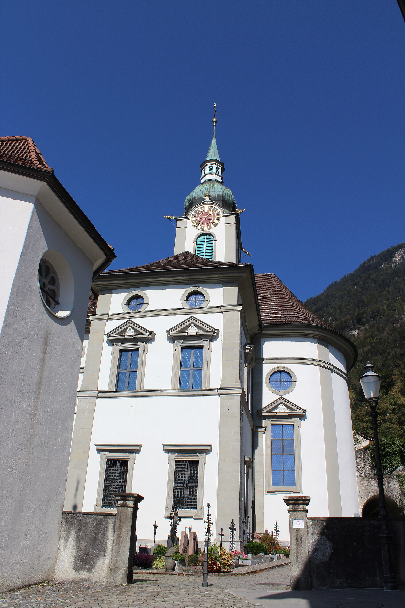
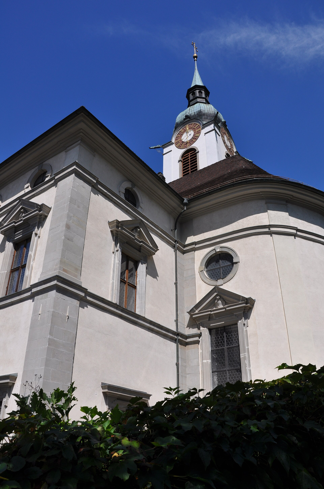
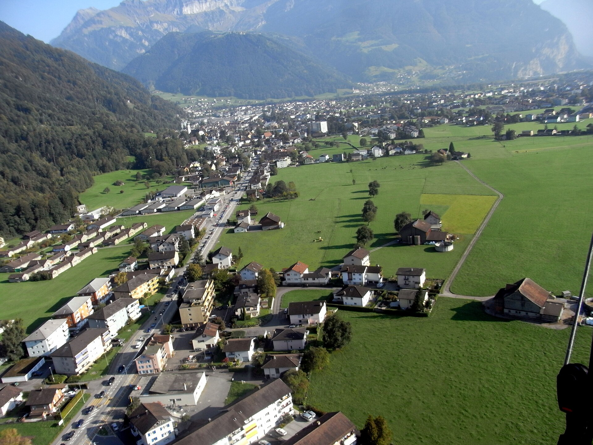
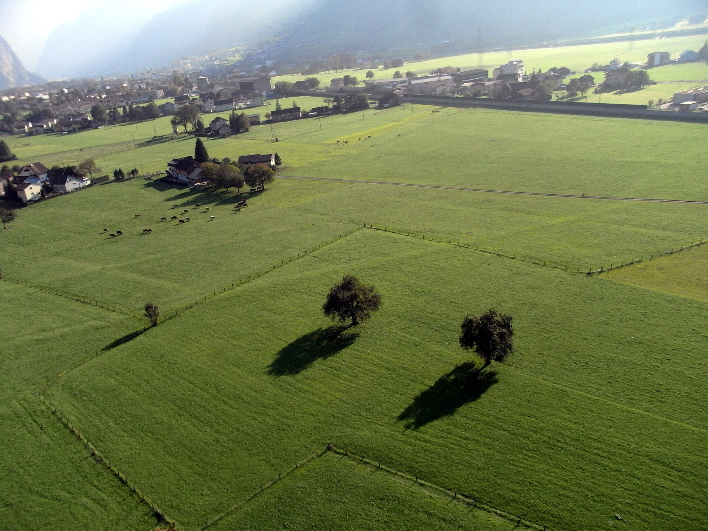
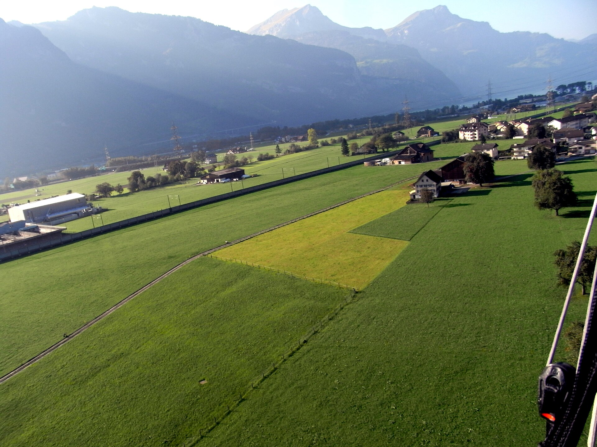

Real Altdorf reference photos
🏔 Real Bristen mountain (seen from Altdorf)

bristen-from-altdorf.jpg
— Bristenstock peak from Altdorf train station

bristen-sunset-from-altdorf.jpg
— Same peak, sunset
⛪ Pfarrkirche St. Martin — exterior, wider shots
church-altdorf-kirche-wide.jpg
— wider exterior view

church-st-martin-2018.jpg
— 2018 exterior
church-st-martin-2012.jpg
— 2012 exterior

church-pfarrkirche-st-martin-1.jpg
— exterior closer in
🏘 Altdorf village panoramas (church tower + Alps visible in background)

panoramio-1.jpg

panoramio-2.jpg

panoramio-3.jpg